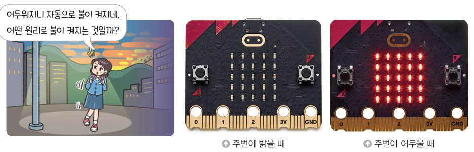
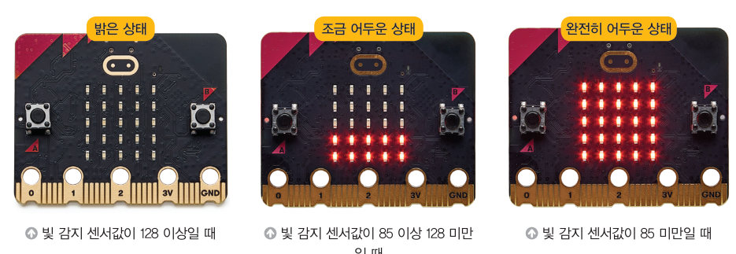

살아있는 교과서 · Ⅰ. 컴퓨팅 시스템 · 2. 피지컬 컴퓨팅 프로그래밍 · 02 24~27쪽
수면 온도 알림이 장치 만들기
밤에 잘 때 내 방은 너무 춥거나 덥지 않을까? 온도 센서와 빛 감지 센서로 밤과 낮을 구분하는 프로그램을 가상 마이크로비트로 실행하고, 하루를 흘려 보내는 스마트 가로등과 온도에 따라 도는 선풍기로 조건문을 익혀 보자.
🎯 학습 목표 — 문제 해결에 적합한 센서를 선택하고 동작을 제어하는 프로그램을 작성하여, 밤과 낮을 구분하고 밤에 방 안의 온도를 표시해 주는 장치를 만들 수 있다.
문제 상황 · 문제의 이해와 분석수면 온도 알림이 장치 만들기 24~25쪽
24쪽“에취! 밤에 자고 일어났더니 감기에 걸렸어.” “방 안 온도가 너무 낮았던 게 아닐까? 봄철 알맞은 실내 온도는 19~23 ℃라고 해.” “방 안 온도를 자동으로 측정하여 알려 주는 장치를 만들어 볼까?”
밤에 잠을 잘 때 건강을 위해 알맞은 실내 온도를 유지하는 것은 매우 중요하다. 온도 센서와 빛 감지 센서를 이용해 밤과 낮을 구분하고 밤에 방 안의 온도를 표시해 주는 장치를 만들어 보자. (계절별 실내 적정 온도 — 봄·가을: 19~23 ℃, 여름: 24~27 ℃, 겨울: 18~21 ℃)
24쪽온도 센서는 주변의 온도를 측정하는 장치로 −5~50 ℃ 범위 내의 값을 측정한다. 빛 감지 센서는 주변 빛의 양을 측정하는 장치로 0(어두움)~255(밝음)의 값으로 빛의 밝기를 감지한다.
1문제 나누기 작은 문제와 알고리즘을 연결해 보자.
온도 확인
밤과 낮 확인
야간 적정 온도 상태 안내
밤과 낮의 기준값 정하기 주변 밝기에 따라 다르므로 빛 감지 센서값을 측정하여 자신만의 기준값을 정해야 한다(예: 128).
프로그래밍하기 · 평가하기수면 온도 알림이를 가상 마이크로비트로 실행해 보자 25~26쪽
🌡 온도와 💡 빛 밝기를 바꾸고 A, B, 흔들기를 눌러 보세요.
1다음 상황에서 흔들기를 하면 LED 스크린에 무엇이 나타날까? (기준값 128, 적정 온도 19~23 ℃) 가상 마이크로비트로 확인해 보자.
빛 50, 온도 17 ℃
빛 50, 온도 21 ℃
빛 50, 온도 26 ℃
빛 200, 온도 26 ℃
2B 버튼을 눌렀을 때 빛 감지 센서값이 100이면 이 출력된다. 내 방에 맞게 기준값을 정하려면 정해야 한다.
3개선하기 흔들림을 감지하지 않아도 밤이 되면 적정 온도를 안내하도록 프로그램을 어떻게 고치면 좋을지 써 보자.
해 보기 · 모둠빛 감지 센서와 온도 센서를 활용한 장치 만들기 27쪽

27쪽“어두워지니 자동으로 불이 켜지네. 어떤 원리로 불이 켜지는 것일까?” 주변이 밝을 때와 어두울 때
1 (1) 주변이 어두워지면 최대 밝기로 켜지는 가로등 — 빛 감지 센서값이 128 이상이면 꺼지고, 128 미만이면 켜진다. (2) 주변이 어두운 정도에 따라 밝기가 조절되는 스마트 가로등 — 128 이상: 밝은 상태, 85 이상 128 미만: 조금 어두운 상태, 85 미만: 완전히 어두운 상태.

27쪽빛 감지 센서값에 따라 밝기가 달라지는 스마트 가로등
스마트 가로등하루를 흘려 보내며 가로등을 관찰하자
🕒 시각12:00
1스마트 가로등 프로그램에서 각 조건일 때 LED 밝기(0~255)를 정해 보자.
빛 감지 센서값 128 이상
85 이상 128 미만
85 미만
2 온도에 따라 선풍기 날개의 회전 속도를 조절하는 애니메이션을 만들려고 한다. 조건 — 30 ℃ 이상: 초강풍, 28 ℃ 이상 30 ℃ 미만: 강풍, 25 ℃ 이상 28 ℃ 미만: 약풍, 22 ℃ 이상 25 ℃ 미만: 미풍, 22 ℃ 미만: 정지
🌡 온도26 ℃
2다음 온도에서 선풍기는 어떻게 동작할까?
21 ℃
24 ℃
27 ℃
28 ℃
31 ℃
확인 꼭꼭 · 단원 평가하기수면 온도 알림이 장치 41쪽
06위 코드를 실행했을 때 ‘high’라고 출력되는 조건은?
정리하기수면 온도 알림이 장치
1센서값과 조건
빛 감지 센서는 주변 빛의 양을 (어두움)~ (밝음)의 값으로 감지하고, 온도 센서는 주변 온도를 측정한다. 밤과 낮을 구분하려면 빛 감지 센서값을 과 비교한다.
평가 기준
스스로 평가
컴퓨팅 사고력 온도 센서와 빛 감지 센서를 선택하여 조건에 따라 동작을 제어하는 프로그램을 이해했는가?
컴퓨팅 사고력 경곗값(이상·미만)을 정확하게 판단했는가?
디지털 문화 소양 생활 속 문제를 해결하는 장치를 친구들과 함께 구상했는가?
제출학생 정보 · 제출하기
모든 활동을 마친 뒤 제출하면 전체가 한 번에 채점되고 피드백이 나타나요. 학년을 꼭 적어 주세요 — 답안은 선생님 스프레드시트(내 학년 시트의 정보 탭)에 기록돼요.